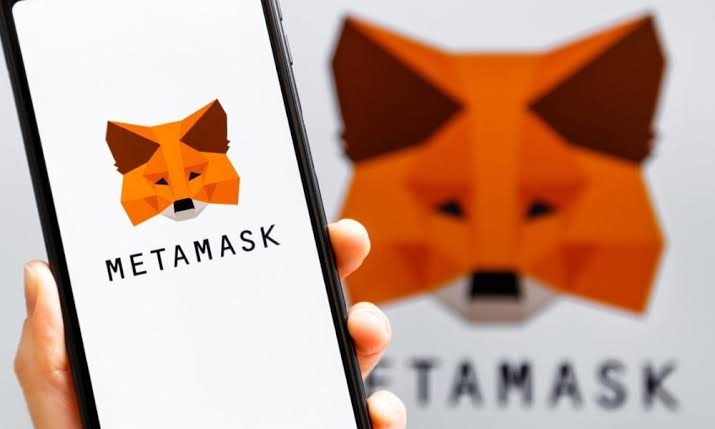
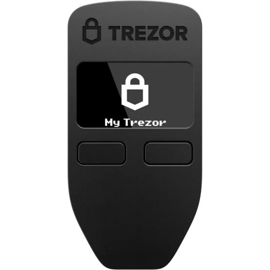
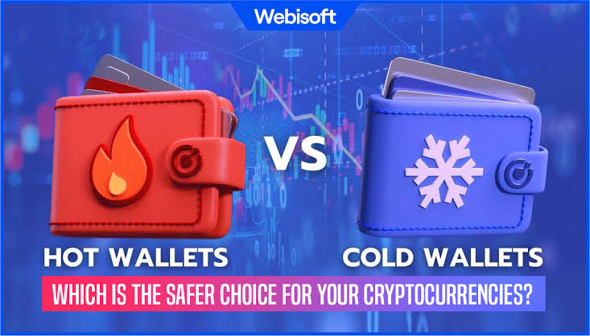

A. Apa Itu Wallet dan Jenis-jenisnya

Untuk memiliki dan menyimpan Bitcoin, seseorang memerlukan dompet digital yang disebut wallet. Wallet berfungsi seperti rekening bank pribadi di dunia kripto, tempat kamu bisa menyimpan, mengirim, dan menerima Bitcoin. Wallet menyimpan kunci privat dan publik yang digunakan untuk mengakses dan mengontrol asetmu.
1. Hot Wallet (Aplikasi/Web)
 Hot wallet adalah jenis dompet yang selalu terhubung ke internet. Contohnya seperti Trust Wallet, Blockchain.com, dan Exodus. Kelebihannya adalah mudah diakses dan praktis untuk transaksi cepat. Namun, karena selalu online, hot wallet lebih rentan terhadap serangan hacker.
2. Cold Wallet (Hardware/Paper)
 Cold wallet disimpan secara offline, baik dalam bentuk perangkat keras (seperti Ledger atau Trezor) maupun kertas cetak yang berisi kunci privat dan alamat publik. Keunggulannya adalah keamanan yang jauh lebih tinggi, karena tidak terhubung ke internet. Kekurangannya, aksesnya tidak sepraktis hot wallet.
B. Cara Membuat Wallet Pertama
Membuat wallet Bitcoin sangat mudah. Pengguna dapat mengunduh aplikasi wallet resmi dari toko aplikasi atau situs terpercaya. Setelah instalasi, aplikasi akan membuat sepasang kunci privat dan publik untukmu. Pastikan kamu menyimpan recovery phrase (biasanya 12 atau 24 kata acak) dengan aman, karena itu adalah satu-satunya cara memulihkan wallet jika perangkat hilang.
Setelah wallet dibuat, kamu akan mendapatkan alamat Bitcoin yang dapat digunakan untuk menerima atau mengirim transaksi ke pengguna lain.
C. Menjaga Keamanan Wallet
Keamanan wallet adalah prioritas utama. Selalu aktifkan fitur keamanan tambahan seperti autentikasi dua faktor (2FA) dan jangan pernah membagikan private key kepada siapa pun. Simpan cadangan recovery phrase di tempat yang aman dan terpisah dari perangkat utama.
Hindari menggunakan jaringan Wi-Fi publik saat mengakses wallet dan pastikan perangkatmu terlindungi dari virus atau malware. Sedikit kelalaian dapat menyebabkan kehilangan seluruh asetmu secara permanen.
D. Kesalahan Umum Pengguna Baru

Pengguna baru sering kali melakukan kesalahan seperti membagikan private key, tidak mencadangkan recovery phrase, atau menyimpan Bitcoin di bursa tanpa kendali penuh atas wallet-nya. Kesalahan lain adalah mengirim Bitcoin ke alamat yang salah, karena transaksi di blockchain bersifat permanen dan tidak dapat dibatalkan.
Untuk menghindari hal ini, selalu verifikasi alamat penerima, pahami cara kerja wallet, dan pelajari lebih lanjut tentang dasar keamanan digital sebelum melakukan transaksi besar.